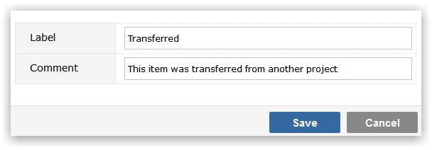

Link Types are optional codes that you can use to describe the reason that two or more items in your system are related - for example 'Duplicate' or 'Causal' - rather than allowing users to specify linkage between items using free-format text.
Make sure that you have selected the Project Template that you wish to maintain Link Types values for from the drop-down list.
To Add a new Link Type value, click on the Add button. You will be prompted to provide:

Click Save to create the Link Type value.
To maintain the Label or Comment values, click in the appropriate field and use Inline editing to easily and instantly change the field value.
To delete a Link Type click on the delete icon to the right of the screen. You will be required to specify an alternative value that any items in the deleted Link Types will be recoded to. This is to ensure that there are no orphaned records in your data, with Link Type codes that do not exist in the Template.
NoteLink Types make a simple relationship between work items, Gemini also has more sophisticated Hierarchical Dependencies